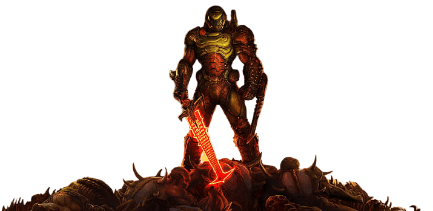
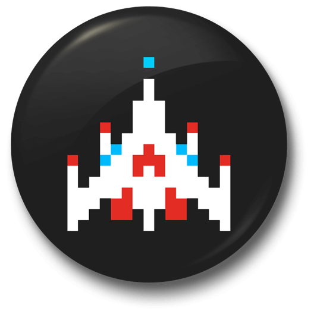
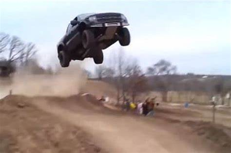
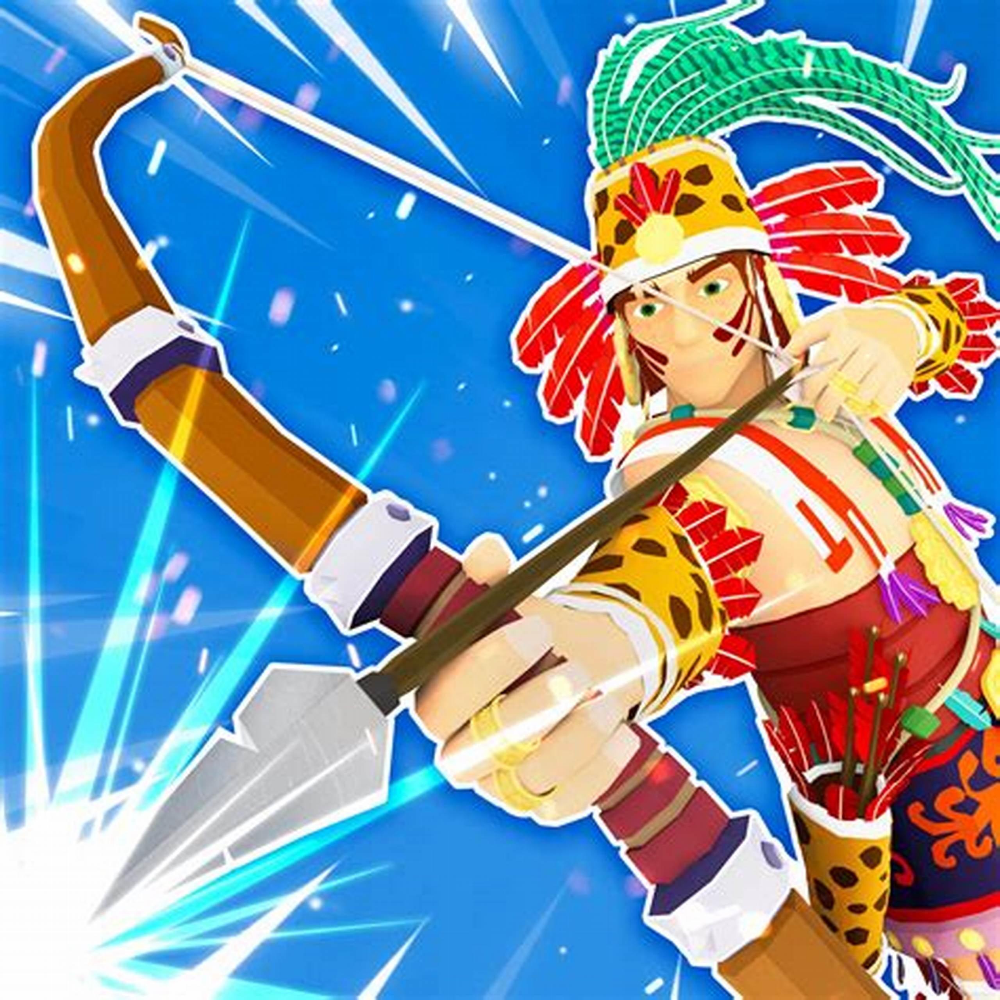

From one of the best VideoGame website: Arcader.com
This Link: Doom will take you to the VideoGame, all about killing bad guys, it was made in the 90's and was the second ever first person shooter
This is a game from the ealry 80's about destroying aliens, it like a better version of space invaders
Goto this link: Galaga to start playing
Crazy Stunt Cars is a game about driving and doing Insane stunts! It also allows MULTIPLAYER, start up a server and invite friends. Warning: The graphics don't match the picture
Goto this link: CrazyStuntCars to start playing
Easily one of the best time passers in class, It's a simple Capture The Flag game
with a medievil twist! It has nice Low Poly graphics and play style, play with friends!
Goto this link: NarrowOne to start playing
.
More Games Here